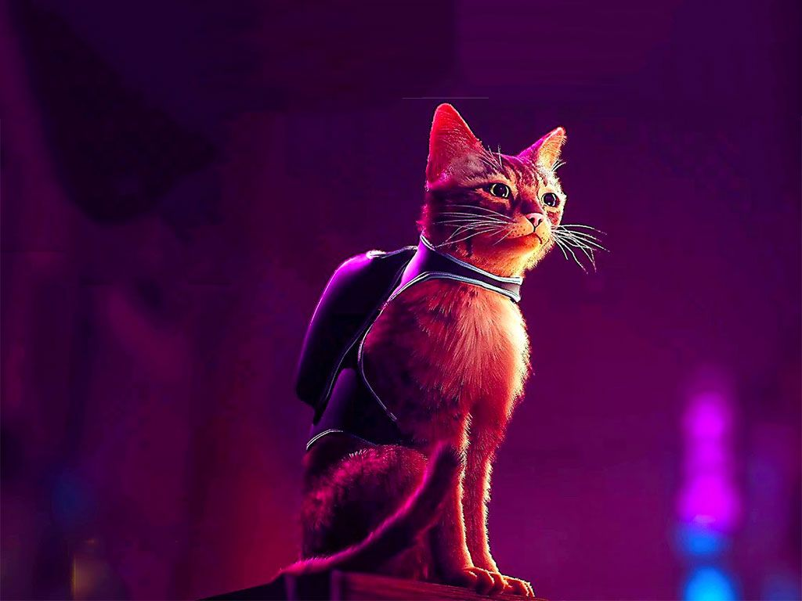
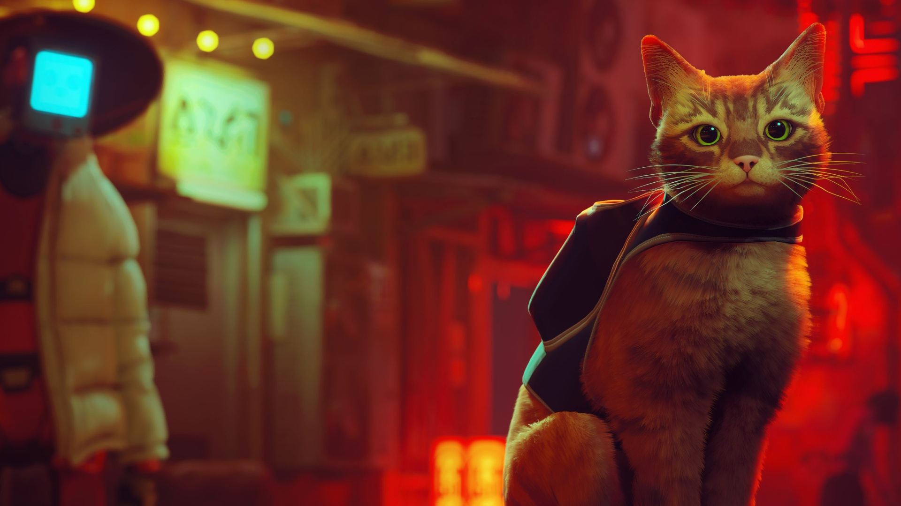

HOME-CONTENT

Stray is a 2022 adventure game developed by BlueTwelve Studio and published by Annapurna Interactive. The story follows a stray cat who falls into a walled city populated by robots, machines, and mutant bacteria, and sets out to return to the surface with the help of a drone companion, B-12. The game is presented through a third-person perspective
GALLERY-CONTENT

Stray is a 2022 adventure game developed by BlueTwelve Studio and published by Annapurna Interactive. The story follows a stray cat who falls into a walled city populated by robots, machines, and mutant bacteria, and sets out to return to the surface with the help of a drone companion, B-12. The game is presented through a third-person perspective
PACKAGES-CONTENT

Stray is a 2022 adventure game developed by BlueTwelve Studio and published by Annapurna Interactive. The story follows a stray cat who falls into a walled city populated by robots, machines, and mutant bacteria, and sets out to return to the surface with the help of a drone companion, B-12. The game is presented through a third-person perspective